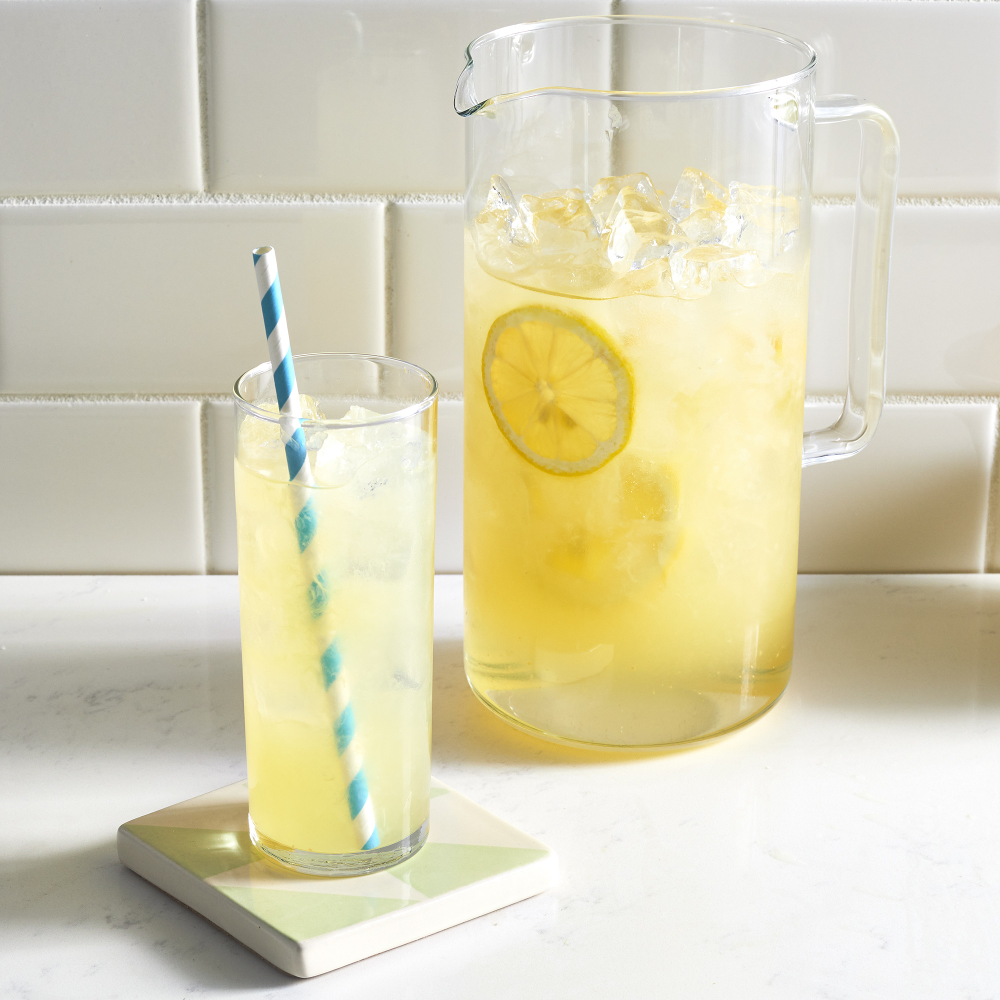

Lemonade

>
Best Lemonade Ever
This lemonade recipe makes a very refreshing drink!
When life gives you lemons, make the Best Lemonade Ever! This aptly named recipe is as good as it gets: Sweet, tart, easy to throw together, and oh-so refreshing. Sweeten your day with our top-rated lemonade recipe (and get our best lemonade serving and storage tips).
Ingredients
- Sugar and Water: What makes this lemonade so special? The recipe starts with a simple syrup, which is just a fancy way of saying the first step is dissolving sugar in boiling water. This ensures the finished drink is totally cohesive and smooth (and it prevents sugar from collecting at the bottom of the pitcher).
- Lemon Juice: Obviously, you'll need lemon juice to make homemade lemonade. Freshly squeezed juice is definitely the way to go if you have fresh lemons available, but bottled juice will work in a pinch.
- Ice: There's nothing like a refreshing glass of ice cold lemonade to cool you down on a hot day. Just make sure to add the ice right before serving — you don't want it to dilute the sweet flavor.
Steps
- Start by firmly rolling the lemons around on the counter. This will help release the juices and make your job a lot easier. Cut the lemon in half lengthwise, then squeeze out the juice by hand or with a juicer. Make sure to juice the lemons over a large measuring cup so you can see exactly how much liquid you have.
- It's shockingly simple to make simple syrup on the stove. Just combine sugar and water in a small saucepan, bring the mixture to a boil, and stir it until the sugar is dissolved.
- Pour cold water into a pitcher. Stir in lemon juice and pulp, then add simple syrup to taste.
- Serve over ice. If you're feeling fancy, garnish each glass with a fresh lemon slice or a candied lemon peel.
Home Page